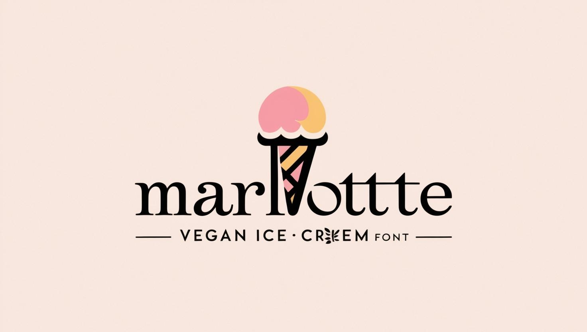
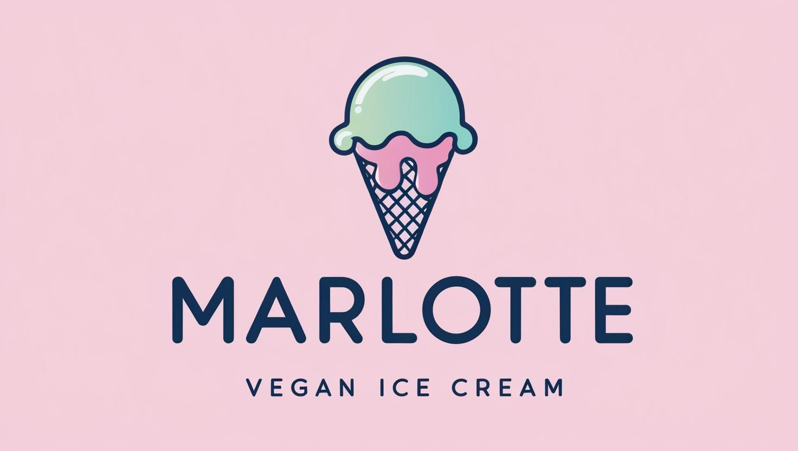
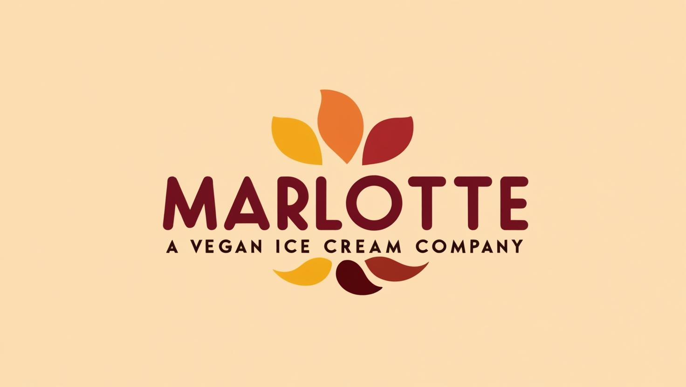
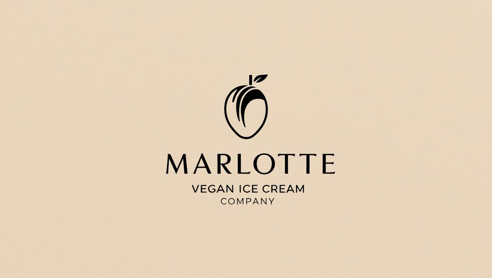
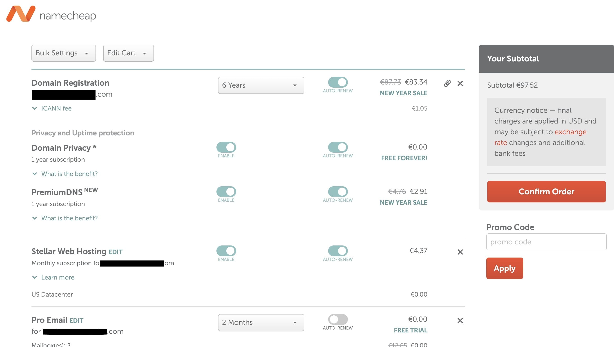
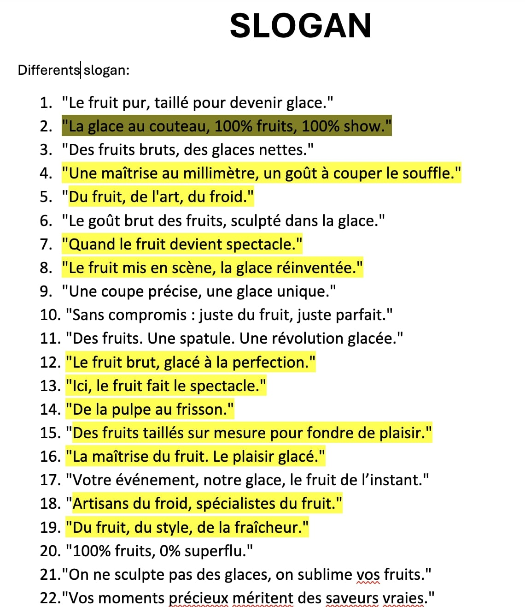

Création et mise en ligne d’un site web
Lors de mon deuxième stage, j’ai travaillé avec Marlotte, une société de glaces vegan qui se met en avant lors d’évènements. Mon rôle principal a été de :
- Créer un site web de A à Z, avec un design, des couleurs et un contenu conformes aux attentes du client.
- Assurer la mise en ligne du site et vérifier son bon fonctionnement.
- Proposer plusieurs logos et slogans afin de renforcer l’identité visuelle de la marque.
Communication sur les réseaux sociaux
Nous avons également travaillé sur la présence de Marlotte sur les réseaux sociaux, avec les objectifs suivants :
- Améliorer la qualité des vidéos pour un impact visuel plus fort.
- Mettre en place une stratégie de publication avec un minimum d’une vidéo par semaine.
- Préparer un Notion complet pour organiser les publications, vidéos et événements de la société.
Ce stage m’a permis de développer des compétences en design web, en gestion de projet, ainsi qu’en stratégie de communication digitale. J’ai apprécié collaborer étroitement avec le fondateur de Marlotte pour répondre à ses besoins spécifiques et contribuer à son développement.
Illustrations
Voici quelques exemples des logos proposés ainsi que l’hébergement utilisé :





